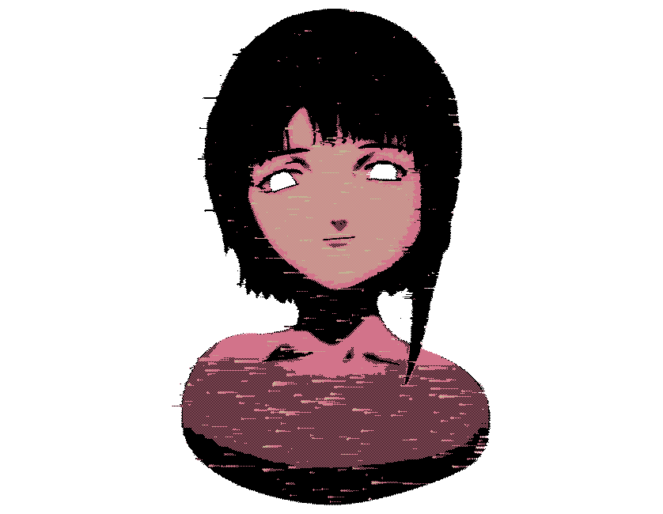
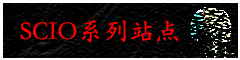
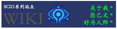
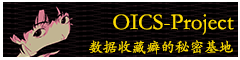
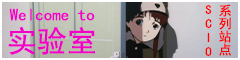
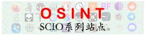
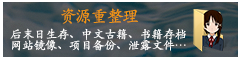
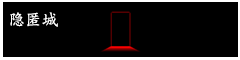

“耕者有其田”已是过去式，“学者有其源”才是新时代的我们，应当追求的，应当努力实现的！

SCIO系列站点：基本信息
一、SCIO系列站点（简称“系列站点”）是个实验性质的项目，此为私人空间，而非公共领域。
二、系列站点灵感源于SE Lain、封图源于fauux，其他素材亦为官方/社区创作，简易处理而成。
三、系列站点由数个子站组成，其中子站由其辖内的子项目构成，项目不断发展，随时会变更。
四、系列站点没有更新推送机制，您需要自行探索；我个人没有邮箱外的沟通方式，注意甄别。
五、系列站点所有设计均只考虑PC用户，请使用电脑浏览；善用浏览器的缩放功能，保护眼睛。
SCIO系列站点：子站/子项目
主要项目



其他项目

封闭/本地项目



关于我的简要说明
名字：圣王H、holykingh；废渣（1/2/3号）；SCIO；宋文和。它们都是我，现在我更多使用“SCIO”。（称谓历史可以参考：wiki）
风格：总的来说，我喜欢写东西，但通常会跑题，你可以理解为“絮絮叨叨”、“啰里啰唆”或“书写狂”（graphomania）。（详细可以参考：《致WIKI访客书》
）
朋友：因为我性格原因（不全是内向，更多的是我容易“以自我为中心”，而我讨厌对话变成只关乎我自己的个人秀），我社交能力约等于0。如果您想，可以随时向我发送邮件，哪怕只是简单的问候。……但在这之前你要知道我“没朋友”不全是意外。
关于SCIO系列站点的简要说明
主旨：我给系列站点的题词便是页面顶部那句慷慨激昂的宣言，但那是我的期望，而非我要做的。我的实力与水平着实微薄。
发展：系列站点本身也起源于一个微小的念头。正如我在刚开始想象不到我能把它维护成我个人的网络帝国与心灵寄托，我也不知道未来会如何，但在我活着的时候，我会尽量去创作。
联系我
如果你是个普通人：songwenheh#gmail.com
如果你也比较个性化：scio#scio.icu
如果你是偏执狂，但只偏执一点点：scio#disroot.org（尽量使用：我的PGP公钥）
如果你有被害妄想症，反对一切主流：holykingh#cock.li
如果你是极端派，但只极端一点点：ocini#dnmx.org （请勿使用，因为我的邮件客户端没添加它）
如果你是狂热分子，搞得像在密谋什么一样：scio#riseup.net（尽量使用：我的PGP公钥）
以上措辞纯属玩笑，注意将“#”转换为“@”。
较大更新记录
当前版本：v2.8
2023.08.19：对主站内容进行调整，优化了webring页面（v2.7）。
2023.07.16：对主站内容进行调整，优化了文字描述。
2023.05.15：对主站内容进行调整，将友链移植新页面。
2023.04.27：对主站内容较大篇幅改动、增删Webrings。
2023.02.09：对主站内容重写、增添Webrings制度。
2022.05.18：由于027代小狗去世，自2022.05.01以来主页为悼念页，现因结构整改，暂取消此项计划，并永久保留悼念页，聊以慰藉
2022.05.18：对网站构造进行了完全重改，旧构造备份：SCIO博客章程 、当前内容填充情况速览及更新日志